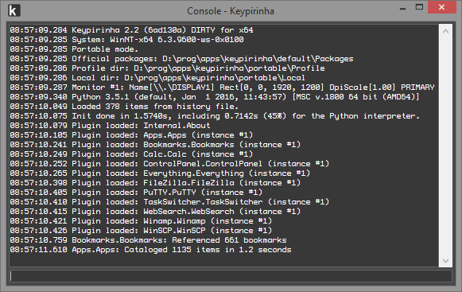

13. Glossary¶
- Catalog
- The Catalog is the name of the internal database of Keypirinha where all the items are indexed to allow a quick search.
- CatalogItem
- The class name of an item.
- Console
The Console window gives access to the output of application’s log. It should be your first destination in case of error or unexpected behavior to check if a plugin emitted a informational/warning/error message.
It also gives you an interactive access to the embedded Python interpreter.
- InstanceID
Keypirinha allows the code source of its packages to be modified at runtime by automatically reloading them every time a modification is done.
The InstanceID number is an unsigned integer internally managed by the application and assigned at runtime to each package, each time they are (re)loaded.
It is also used to ensure only the latest instance of a given package has write access to its section of the Catalog.
Read Overview for more information.
- Item
- Items
- An item is the data unit of the Catalog (Keypirinha‘s internal database). It is a simple data structure, created by the plugins, that has some properties like a display name (label), a category (File, URL, Command Line, ...), a reference to the parent plugin, etc...
- LaunchBox
The L(a)unchBox is Keypirinha‘s main dialog window, from which you can make a search and launch the selected item. It can be opened by pressing the
Ctrl+Win+Kcombination (by default).More info in the First steps chapter.

- Package
- Packages
A Package is a container of one or several plugins and that represents a unique feature visible to the user.
This container holds the source code of its plugins, their dependencies, a default configuration file, if any, and optionally some documentation.
Its content can be stored in a directory or packed in an archive to ease its redistribution (i.e. a
*.keypirinha-packagefile, which is actually a regular zip archive).Read Packages for more information.
- Plugin
- Plugins
- In the context of Keypirinha, a Plugin is a software component written in Python3 that extends the base features of the application. It is always encapsulated in a package.
- Repository
- Repositories
- A Repository is a directory dedicated to the storage of packages. It also defines the way Packages are stored (i.e.: loose files or packed in a single archive).